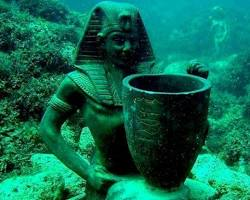
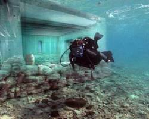
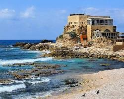
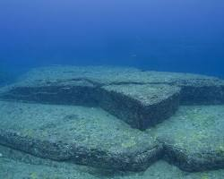

Cidade Submersa de Heracleion, Egito
Cidade Submersa de Heracleion, Egito: Descoberta em 2000, essa antiga cidade portuária oferece um vislumbre da civilização egípcia no Mar Mediterrâneo.
Pavlopetri, Grécia
Considerada a cidade submersa mais antiga da Europa, Pavlopetri data do período micênico e oferece um testemunho da vida cotidiana na Grécia antiga..
Baía de Caesarea, Israel
Antigo porto romano, a Baía de Caesarea abriga ruínas de um hipódromo, um teatro e um porto, além de diversos artefatos históricos.
Yonaguni Monument, Japão
Uma formação rochosa submersa de origem natural ou artificial, o Yonaguni Monument intriga pesquisadores e mergulhadores há décadas.